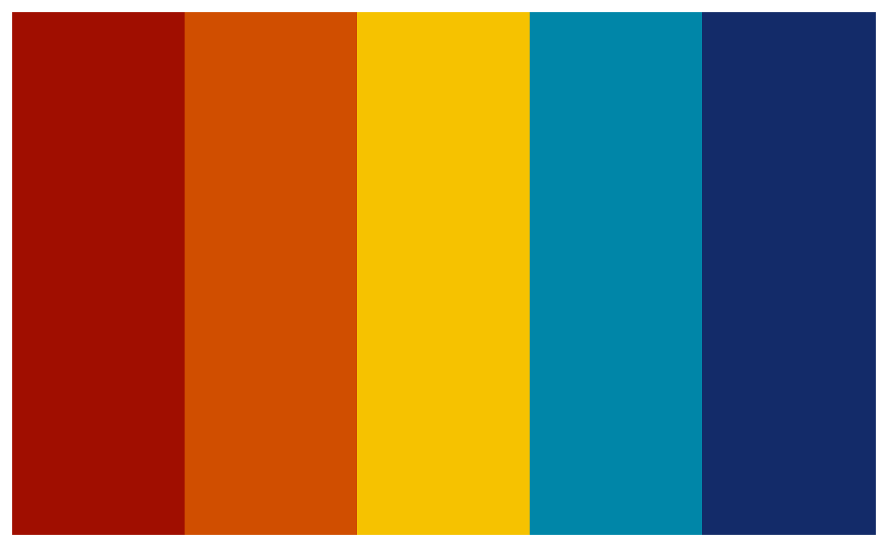

The goal of palettes is to provide methods for working with colour palettes for users and developers.
Creating
pal_colour() is a nice way to create a colour vector.
Colours can be a character vector of hexadecimal strings of the form
"#RRGGBB" or "#RRGGBBAA", colour names from
grDevices::colors(), or a positive integer that indexes
into grDevices::palette(). By default, colour vectors are
always printed as hex codes with colour previews.
colour_vector <- pal_colour(
c("#a00e00", "#d04e00", "#f6c200", "#0086a8", "#132b69")
)
colour_vector
#> <palettes_colour[5]>
#> • #A00E00
#> • #D04E00
#> • #F6C200
#> • #0086A8
#> • #132B69pal_palette() is a nice way to create named colour
palettes.
colour_palette <- pal_palette(
egypt = c("#dd5129", "#0f7ba2", "#43b284", "#fab255"),
java = c("#663171", "#cf3a36", "#ea7428", "#e2998a", "#0c7156")
)
colour_palette
#> <palettes_palette[2]>
#> $egypt
#> <palettes_colour[4]>
#> • #DD5129
#> • #0F7BA2
#> • #43B284
#> • #FAB255
#>
#> $java
#> <palettes_colour[5]>
#> • #663171
#> • #CF3A36
#> • #EA7428
#> • #E2998A
#> • #0C7156Casting and coercion
To compliment pal_colour(), palettes provides
as_colour() to cast objects into colour vectors.
colour_strings <- c("orange", "purple")
as_colour(colour_strings)
#> <palettes_colour[2]>
#> • #FFA500
#> • #A020F0To compliment pal_palette(), palettes provides
as_palette() to cast objects into colour palettes.
colour_list <- list(OrPu = c("orange", "purple"))
as_palette(colour_list)
#> <palettes_palette[1]>
#> $OrPu
#> <palettes_colour[2]>
#> • #FFA500
#> • #A020F0Colour vectors and colour palettes can also be coerced into a tibble
with as_tibble(). See
vignette("tibble", package = "tibble") for an overview of
tibbles.
as_tibble(colour_vector)
#> # A tibble: 5 × 1
#> colour
#> <colour>
#> 1 • #A00E00
#> 2 • #D04E00
#> 3 • #F6C200
#> 4 • #0086A8
#> 5 • #132B69
as_tibble(colour_palette)
#> # A tibble: 9 × 2
#> palette colour
#> <chr> <colour>
#> 1 egypt • #DD5129
#> 2 egypt • #0F7BA2
#> 3 egypt • #43B284
#> 4 egypt • #FAB255
#> 5 java • #663171
#> 6 java • #CF3A36
#> 7 java • #EA7428
#> 8 java • #E2998A
#> 9 java • #0C7156Subsetting
Colour vectors can be subset using [.
-
To extract one or more colours use positive integers:
colour_vector[3] #> <palettes_colour[1]> #> • #F6C200 -
To drop one or more colours use negative integers:
colour_vector[-3] #> <palettes_colour[4]> #> • #A00E00 #> • #D04E00 #> • #0086A8 #> • #132B69 -
To move one or more colours extract, drop, and combine:
c(colour_vector[-3], colour_vector[3]) #> <palettes_colour[5]> #> • #A00E00 #> • #D04E00 #> • #0086A8 #> • #132B69 #> • #F6C200
Colour palettes can be subset using [, [[,
and $.
-
To extract one or more colour palettes use
[:colour_palette["egypt"] #> <palettes_palette[1]> #> $egypt #> <palettes_colour[4]> #> • #DD5129 #> • #0F7BA2 #> • #43B284 #> • #FAB255 -
To extract a single colour palette as a colour vector use
[[or$:colour_palette[["egypt"]] #> <palettes_colour[4]> #> • #DD5129 #> • #0F7BA2 #> • #43B284 #> • #FAB255 colour_palette$egypt #> <palettes_colour[4]> #> • #DD5129 #> • #0F7BA2 #> • #43B284 #> • #FAB255 -
To get names of colour palettes use
names():names(colour_palette) #> [1] "egypt" "java"
Plotting
plot() is a nice way to showcase colour vectors and
colour palettes. The appearance of the plot depends on the input.
-
Colour vectors are plotted as swatches:
plot(colour_vector)
-
Single colour palettes are plotted as swatches with a palette name overlay:
plot(colour_palette["egypt"]) -
Multiple colour palettes are plotted as faceted swatches with palette name titles:
plot(colour_palette)
To interpolate or change the direction of colours in a plot, use the
optional n, direction, space, or
interpolate arguments.
plot(colour_vector, n = 7, direction = -1, interpolate = "linear")All plots are ggplot2 objects and can be customized using any of the standard ggplot2 methods. See the ggplot2 customizing FAQ for some common examples.
Printing
The printing behaviour of colour vectors can be adjusted using a
variety of global options. See help("palettes-options") for
a list of all the available options and their default values.
For example, to change the symbol used for colour previews, set the
palettes.print_symbol option.
options(palettes.print_symbol = "square")
colour_vector
#> <palettes_colour[5]>
#> ■ #A00E00
#> ■ #D04E00
#> ■ #F6C200
#> ■ #0086A8
#> ■ #132B69Set multiple options together for unique printing styles.
-
Print colour vectors compactly:
options( palettes.print_symbol = "circle_large", palettes.print_hex = FALSE, palettes.print_width = 5 ) colour_palette #> <palettes_palette[2]> #> $egypt #> <palettes_colour[4]> #> ⬤⬤⬤⬤ #> #> $java #> <palettes_colour[5]> #> ⬤⬤⬤⬤⬤ -
Mimic the appearance of a character vector:
options( palettes.print_symbol = FALSE, palettes.print_sep = ", ", palettes.print_width = 5, palettes.print_index = TRUE ) colour_vector #> <palettes_colour[5]> #> [1] #A00E00, #D04E00, #F6C200, #0086A8, #132B69
Set any of these options in your .Rprofile
dotfile to have them persist across R sessions on a global or
per-project basis.